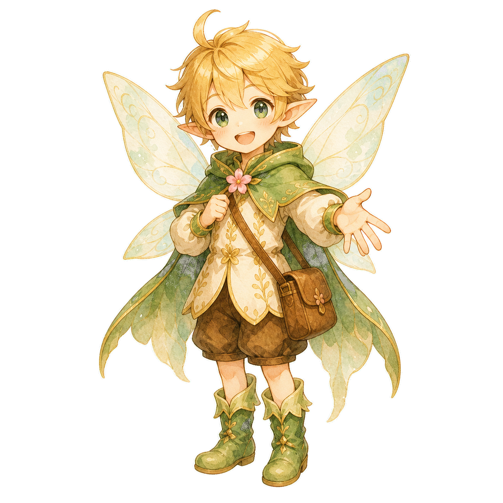

湘南・藤沢
水曜会ポータル
次回の定例会
9月9日（水）
いつもの時間・いつもの会場です
管理者にだけ表示
このあとの定例会

いつもの記録
花記録を使う
参加の記録、指導碁の花、冒険者カードはこちらです。
湘南・藤沢
次回の定例会
いつもの時間・いつもの会場です
このあとの定例会

参加の記録、指導碁の花、冒険者カードはこちらです。
管理者専用
水曜会からのご案内
開催日、時間、会場をご確認ください。催しを押すと、詳しい内容が開きます。
皆さんで囲碁を楽しむ交流会です。初めて参加する方も歓迎します。
先生との指導碁を中心にした会です。組み合わせは当日ご案内します。
詳しい内容と会場は、決まりしだいこのページでお知らせします。
予定が変更になった場合も、このページでお知らせします。
管理者専用
参加申込み
水曜会交流会
管理者が確認できる申込み一覧へ届きます。
水曜会の皆さんへ
先生から届いた言葉を、悦子さんが確認して掲載します。
一局一局を大切に、ゆっくり楽しみましょう。
次の水曜会で、皆さんにお会いできるのを楽しみにしています。
掲載期間：9月3日～9月30日
暑い日が続きます。体調に気をつけながら、囲碁を楽しみましょう。
迷ったときは、まず自分が打ちたい場所をよく見てみましょう。
管理者専用
花記録を開く
この入口から現在の「水曜会 花記録」へ移動します。花やスタンプの記録場所は変わりません。
画面見本のため、本番アプリは開きません
初回だけの手続き
これまで集めた花やスタンプは消えません。今まで花記録を使っていたスマホで行います。
番号が分からない方は、下のボタンから今までの花記録を開いて確認できます。
今までの花記録
この番号をポータルへ戻して入力します。
実際には現在の花記録の番号が表示されます
会場で行います
受付記録とお名前を確認したあと、悦子さんが一度だけ使える連携QRを表示します。このスマホで読み取ってください。
連携QRは15分間・1回だけ使えます
花・スタンプ・冒険者カードは、これまでどおり今の花記録で見られます。
会場でお手伝いします
次のどの場合も、悦子さんが受付で確認できます。

水曜会探索マップ
ここから先は今のアプリです。現在の記録を守るため、最初はこの形でつなぎます。
水曜会リーグ
ChatGPTアカウントは必要ありません
会員番号 S-0456
水曜会の会員確認はできましたが、現在はリーグ参加者として登録されていません。
管理者専用
画面見本のため、実際の登録内容は変更されません
水曜会リーグ
| 順位 | お名前 | 対局数 | 成績 |
|---|---|---|---|
| 1 | 山田さん | 8 | 6勝2敗 |
| 2 | 佐藤さん | 7 | 5勝2敗 |
| 3 | 鈴木さん | 8 | 5勝3敗 |
リーグ参加者
確認したい方のお名前を押してください。
先生専用
ほかの先生のご縁帳は表示されません
先生専用・松本先生
3か月ぶりの再会 六子
はじめての一局 九子
次の一手をじっくり確認 三子
これまでのご縁
その日の記録
その日の記録
管理者専用
一局一局を大切に、ゆっくり楽しみましょう。
次の水曜会で、皆さんにお会いできるのを楽しみにしています。
悦子さんの確認後、掲載期間中だけ表示